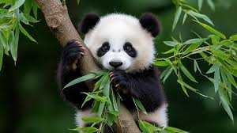

The giant panda is a black-and-white bear native to the mountain forests of central China. Known for its gentle nature and love of bamboo, the panda spends most of its day eating and resting. Despite being classified as a carnivore, its diet is 99% bamboo.
This website provides valuable information about giant pandas and their conservation efforts